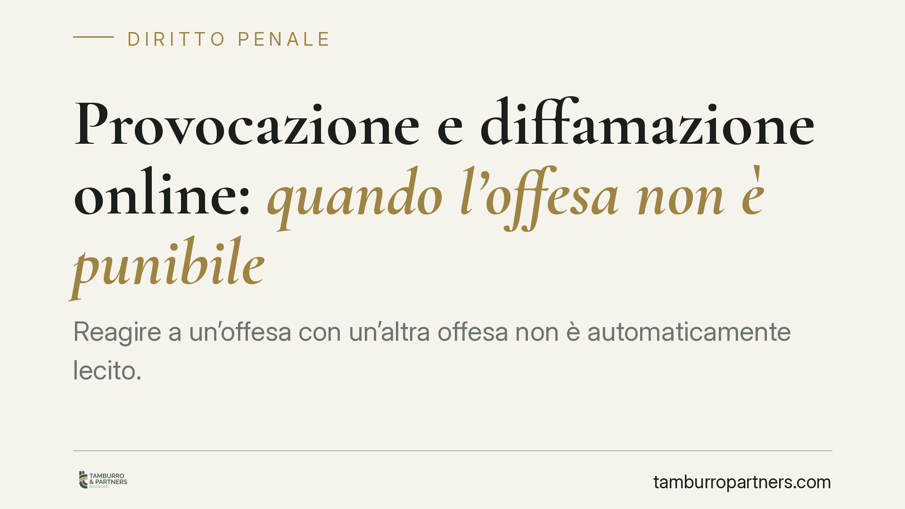

Provocazione e diffamazione online: quando l'offesa non è punibile
Reagire a un'offesa con un'altra offesa non è automaticamente lecito. L'ordinamento conosce però la provocazione, che a certe condizioni rende non punibile chi risponde "nello stato d'ira" a un fatto ingiusto altrui. Nel dibattito acceso dei social il tema torna spesso, ma i confini sono stretti e le conseguenze civili restano. Ecco cosa dice davvero la norma.

Il punto di partenza
Sui social capita spesso: uno scambio si accende, qualcuno risponde con parole pesanti e poi si difende dicendo "mi ha provocato". La provocazione esiste nel diritto penale, ma non funziona come molti immaginano. Vale la pena chiarire cosa prevede la norma e cosa no, evitando le semplificazioni che circolano online.
Una precisazione preliminare. L'ingiuria (l'offesa rivolta direttamente alla persona presente) è stata depenalizzata dal D.Lgs. 7/2016: oggi è un illecito civile che può comportare risarcimento e una sanzione pecuniaria a favore dello Stato. Resta invece reato la diffamazione (art. 595 c.p.), cioè l'offesa alla reputazione altrui comunicata a più persone e in assenza dell'offeso. La comunicazione via social rientra tipicamente in questa seconda ipotesi.
Cosa prevede l'art. 599 c.p.
L'art. 599, secondo comma, del codice penale stabilisce che non è punibile chi ha commesso il fatto (ingiuria o diffamazione) "nello stato d'ira determinato da un fatto ingiusto altrui, e subito dopo di esso".
È importante inquadrarla correttamente: si tratta di una causa di non punibilità, non di una scriminante. La differenza non è formale. Le scriminanti (artt. 51-54 c.p., come la legittima difesa) rendono il fatto *lecito*. La causa di non punibilità dell'art. 599 lascia il fatto *illecito*, ma esclude la pena in presenza di determinati presupposti. Il reato c'è; semplicemente non viene punito.
Diversa ancora è l'attenuante della provocazione dell'art. 62, n. 2, c.p.: quella non esclude la pena, ma la riduce, e opera per una gamma più ampia di reati. Le tre categorie – scriminante, causa di non punibilità, attenuante – vanno tenute distinte.
I presupposti dell'art. 599, comma 2, sono tre e cumulativi: uno stato d'ira; un fatto ingiusto altrui che l'abbia provocato; il requisito dell'immediatezza ("subito dopo").
Perché online è tutto più complicato
Il requisito dell'immediatezza mal si concilia con i tempi dei social. Una discussione può protrarsi per ore o giorni; una risposta offensiva pubblicata il giorno dopo difficilmente rientra nel "subito dopo" richiesto dalla norma.
Anche l'individuazione del "fatto ingiusto altrui" è delicata. Un contenuto critico, anche sgradevole, non è di per sé ingiusto: può rientrare nel diritto di critica. Il fatto deve essere obiettivamente contra ius per giustificare la reazione.
Da ultimo, un chiarimento essenziale: la provocazione non rende lecita l'offesa. Anche quando escludesse la punibilità penale, resterebbe la responsabilità civile. Chi è stato diffamato può comunque agire per il risarcimento del danno in sede civile. La non punibilità penale non cancella le conseguenze risarcitorie.
Il nodo probatorio
Chi invoca la provocazione deve dimostrarne i presupposti. E qui la prova digitale è insidiosa: uno screenshot isolato raramente basta. Un'immagine estrapolata non mostra il contesto, la sequenza temporale, l'eventuale fatto ingiusto che ha preceduto la reazione. Serve una ricostruzione completa e verificabile dello scambio.
È un problema che riguarda entrambe le parti: chi accusa di diffamazione e chi si difende invocando la provocazione hanno lo stesso interesse a conservare l'intera cronologia, non frammenti.
Cosa fare in concreto
- Conserva l'intera cronologia, non singole schermate: salva la conversazione completa con date, orari e URL, così da documentare la sequenza degli eventi.
- Valuta l'immediatezza della tua eventuale reazione: una risposta a distanza di tempo difficilmente integra la provocazione ex art. 599 c.p.
- Non dare per scontato che "provocato" equivalga a "impunito": la responsabilità civile resta anche quando la penale è esclusa.
- Verifica se il contenuto altrui è davvero "ingiusto" o se rientra nella critica lecita: la distinzione cambia l'esito.
- Documenta con strumenti affidabili: quando la questione è rilevante, l'analisi dei fatti specifici richiede una valutazione tecnica e giuridica del singolo caso.
La presenza pubblica in rete – di chi svolge professioni esposte come l'avvocatura o il giornalismo, ma anche di chiunque – aumenta la frequenza di questi conflitti. Conoscere i confini reali della provocazione aiuta a non alimentare aspettative errate, in entrambe le direzioni.
---
*Contributo informativo a cura di Tamburro & Partners - Avv. Giuseppe Tamburro. Non costituisce parere legale.*
Ogni condominio ha una storia a sé.
Se gestisci un'amministrazione e vuoi un confronto su una specifica questione condominiale, scrivi allo studio. Ti rispondiamo entro un giorno lavorativo.